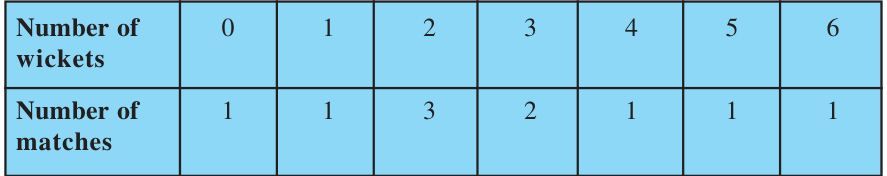
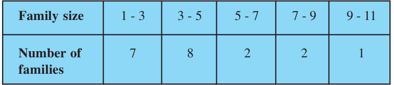

13.3 Mode of Grouped Data
Recall from Class IX, a mode is that value among the observations which occurs most often, that is, the value of the observation having the maximum frequency. Further, we discussed finding the mode of ungrouped data. Here, we shall discuss ways of obtaining a mode of grouped data. It is possible that more than one value may have the same maximum frequency. In such situations, the data is said to be multimodal. Though grouped data can also be multimodal, we shall restrict ourselves to problems having a single mode only.
Let us first recall how we found the mode for ungrouped data through the following example.
Example 4 :
The wickets taken by a bowler in 10 cricket matches are as follows:
\(2 \quad 6 \quad 4 \quad 5 \quad 0 \quad 2 \quad 1 \quad 3 \quad 2 \quad 3\)
Find the mode of the data.
Solution :
Let us form the frequency distribution table of the given data as follows:

Clearly, 2 is the number of wickets taken by the bowler in the maximum number (i.e., 3) of matches. So, the mode of this data is 2.
In a grouped frequency distribution, it is not possible to determine the mode by looking at the frequencies. Here, we can only locate a class with the maximum frequency, called the modal class. The mode is a value inside the modal class, and is given by the formula:
\(\text{Mode} = l + \left(\dfrac{f_{1} - f_{0}}{2f_{1} - f_{0} - f_{2}}\right) \times h\)
where \(l =\) lower limit of the modal class,
\(h =\) size of the class interval (assuming all class sizes to be equal),
\(f_{1} =\) frequency of the modal class,
\(f_{0} =\) frequency of the class preceding the modal class,
\(f_{2} =\) frequency of the class succeeding the modal class.
Let us consider the following examples to illustrate the use of this formula.
Example 5 :
A survey conducted on 20 households in a locality by a group of students resulted in the following frequency table for the number of family members in a household:

Find the mode of this data.
Solution :
Here the maximum class frequency is 8, and the class corresponding to this frequency is 3 – 5. So, the modal class is 3 – 5.
Now
modal class = 3 – 5, lower limit (l) of modal class = 3, class size (h) = 2
frequency (\(f_{1}\)) of the modal class = 8,
frequency (\(f_{0}\)) of class preceding the modal class = 7,
frequency (\(f_{2}\)) of class succeeding the modal class = 2.
Now, let us substitute these values in the formula :
\(\text{Mode} = l + \left(\dfrac{f_{1} - f_{0}}{2f_{1} - f_{0} - f_{2}}\right) \times h\)
\(= 3 + \left(\dfrac{8 - 7}{2 \times 8 - 7 - 2}\right) \times 2 = 3 + \dfrac{2}{7} = 3.286\)
Therefore, the mode of the data above is 3.286.
Example 6 :
The marks distribution of 30 students in a mathematics examination are given in Table 13.3 of Example 1. Find the mode of this data. Also compare and interpret the mode and the mean.
Solution :
Refer to Table 13.3 of Example 1. Since the maximum number of students (i.e., 7) have got marks in the interval 40 - 55, the modal class is 40 - 55. Therefore,
the lower limit (l) of the modal class = 40,
the class size (h) = 15,
the frequency (\(f_{1}\)) of modal class = 7,
the frequency (\(f_{0}\)) of the class preceding the modal class = 3,
the frequency (\(f_{2}\)) of the class succeeding the modal class = 6.
Now, using the formula:
\(\text{Mode} = l + \left(\dfrac{f_{1} - f_{0}}{2f_{1} - f_{0} - f_{2}}\right) \times h,\)
\(\text{we get}\quad \text{Mode} = 40 + \left(\dfrac{7 - 3}{14 - 6 - 3}\right) \times 15 = 52\)
So, the mode marks is 52.
Now, from Example 1, you know that the mean marks is 62.
So, the maximum number of students obtained 52 marks, while on an average a student obtained 62 marks.
Remarks :
- 1.In Example 6, the mode is less than the mean. But for some other problems it may be equal or more than the mean also.
- 2.It depends upon the demand of the situation whether we are interested in finding the average marks obtained by the students or the average of the marks obtained by most of the students. In the first situation, the mean is required and in the second situation, the mode is required.
Activity 3 :
Continuing with the same groups as formed in Activity 2 and the situations assigned to the groups. Ask each group to find the mode of the data. They should also compare this with the mean, and interpret the meaning of both.
Remark :
The mode can also be calculated for grouped data with unequal class sizes. However, we shall not be discussing it.